Седона — небольшой городок в Аризоне, заслуживающий большего!
Рассмотрим 5 причин, по которым Седона круче, чем Гранд Каньон!
Настоящий городок
— №1 —
Седона не аттракцион для туристов, там течет своя жизнь
Жилье
Рекомендуем пожить в настоящем мотеле, все как в кино!
Сувениры
Не только китайского,
но и местного производства!Еда
Всегда заказывайте фирменный бургер, Вы не разочаруетесь!
Там есть мост дьявола
— №2 —
Да, по нему можно пройти! Если вы осмелитесь, конечно
Небольшая площадь
— №3 —
Все интересные места находятся очень близко
Красивая дорога
— №4 —
Ехать в Седону из Лас-Вегаса совсем не скучно!
Мало туристов
— №5 —
Большинство едет в Гранд Каньон и толпится там
Заинтересовались?
Укажите предполагаемые даты поездки, и мы покажем вам лучшие предложения гостиниц в Седоне